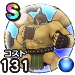

マッスルガード
3周年記念イベントこころ最大コスト+4スキルの斬撃・体技ダメージ+5%ジバリア属性ダメージ+7%ヒャド属性ダメージ+7%ドルマ属性ダメージ+7% / 8.0点
くわしい特徴
【ランク特殊効果】 こころ最大コスト+4スキルの斬撃・体技ダメージ+7%ジバリア属性ダメージ+9%ヒャド属性ダメージ+9%ドルマ属性ダメージ+9%怯え耐性+10%眠り耐性+7%こころ最大コスト+4スキルの斬撃・体技ダメージ+5%ジバリア属性ダメージ+7%ヒャド属性ダメージ+7%ドルマ属性ダメージ+7%